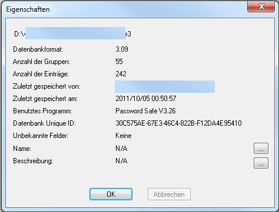
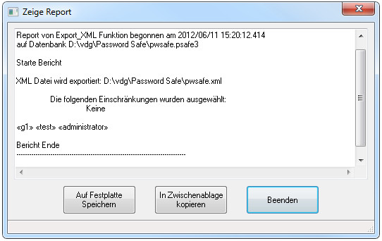

Das Menü Datei enthält die Punkte, um Password Safe Datenbanken erstellen und bearbeiten zu können.
Erstellt eine neue leere Password Safe Datenbank.
Öffnet eine bereits bestehende Password Safe Datenbank. Im Öffnen-Dialog können sie festlegen ob sie die Datenbank als Lesen/Schreiben oder als Nur Lesen öffnen wollen. Nach dem Öffnen wird der aktuelle Status in der unteren Status Bar von Password Safe angezeigt. Ab dann können sie zwischen den beiden Status (R/W oder R-O) hin- und herschalten, entweder mit einem Doppel-Klick auf das Element in der Status-Bar oder über das Menü Datei. Wenn ein anderer Anwender diese Datenbank in Modus Lesen/Schreiben geöffnet hat, ist es nicht möglich zu diesem Modus umzuschalten.
Schließt die aktuell geöffnete Password Safe Datenbank, ohne die Anwendung zu verlassen.
Abhängig davon ob der Anwender die Verwendung des Symbol im Infobereich zugelassen hat, sperrt dies die aktuell geöffnete Datenbank entweder in der Taskleiste (links-Klick zur Dialog-Anzeige zum Entsperren) oder im Infobereich (rechts-Klick zur Menü-Anzeige wo die datenbank wiederhegestellt oder entsperrt werden kann). Das Masterpasswort wird dann abgefragt um die Datenbank zu eröffnen oder zu entsperren. Der Sperrr-Knopf kann auch in der Tool-Leiste gesetzt werden, mit "Toolleiste anpassen" (Rechts-Klick auf der Toolleiste).
Dieser Teil im Menü Datei enthält die Liste der zuletzt geöffneten Datenbanken. Diese Liste ist leer beim ersten Einsatz von Password Safe.
Speichert jede Änderung zur aktuellen Datei ab. Wenn seit der letzten Speicherung keine Änderungen gemacht wurden, oder wenn die Datenbank im NUR Lesen Modus geöffnet wurde, ist dieser Punkt ausgegraut.
Speichert eine Kopie der aktuellen Datenbank mit neuem Namen und Speicherort ab.
Exportiert den Inhalt der aktuellen Datenbank zu einer externen Datei in einem früheren Password Safe Datenbankformat, in XML, oder als Text ab. Wenn ein Filter aktiv ist, können sie die Einträge die den Filterkriterin entsprechen im aktuelle Format exportieren. Weiterhin wird, wenn ain Alias-Eintrag oder eine Verknüpfung den Filterkriterien entspricht, auch die Basis dazu exportiert auch wenn diese die Filterkriterien nicht entspricht. Siehe hier für mehr Information wie man Datenbanken exportiert in anderen Formaten.
Importiert den Inhalt einer früher exportierten oder korrekt formatierten Textdatei, XML, oder eine KeePass Passwort Datenbank in die aktuelle Datenbank. Siehe hier für mehr Information wie man Textdateien importiert.
Führt eine Password Safe Datenbank oder ein Sicherungskopie (.bak) zusammen mit der aktuellen Datenbank. Dies ist im NUR Lesen Modus gesperrt. Zusammenführen nutzt einen Assistenten. Sie können auch das erweierte feld für Asuwahlkriterien ankreuzen um einzugrenzen welche Einträge und welche Felder der Einträge zur Zusammenführung der beiden Datenbanken dienen.
Vergleicht die aktuell geöffnete Datenbank mit einer anderen Password Safe Datenbank. Der Vergleich nutzt einen Assistenten. Sie können auch das erweierte feld für Asuwahlkriterien ankreuzen um einzugrenzen welche Einträge und welche Felder der Einträge zum Vergleichen der beiden Datenbanken dienen. Siehe hier für mehr Informationen wenn die Ergenisse angezeigt werden.
Synchronisiert die aktuell geöffnete Datenbank mit einer anderen Password Safe Datenbank.
Der Unterschied zwischen Zusammenführen und Synchronieren besteht in der Tatsache das beim Zusammenführen sämtliche Elemente aus der synchonisierenden Password Safe Datenbank in die aktuell geöffneten Datenbank übernommen werden. Beim Synchronisieren hingegen werden nur die in der aktuell geöffneten Datenbank vorhandenen Elemente abgearbeitet.
Synchronisieren nutzt einen Assistenten. Sie können auch das erweierte feld für Asuwahlkriterien ankreuzen um einzugrenzen welche Einträge und welche Felder der Einträge zum Synchronisieren der beiden Datenbanken dienen.Ein Datenbank die (standardmäßig) geöffnet ist für Lesen/Schreiben, kann gegen versehentliches Ändern geschützt werden durch Asuwahl von Zu R-O ändern. Gleichermaßen kann eine eine Nur-Lesen Datenbank geändert werden nach der Auswahl von Zu R/W ändern. Wenn sie zu Lesen/Schreiben ändern, werden sie aufgefordert das Masterpasswort einzugeben. Zwischen diese beiden Modi kann auch umgeschaltet werden durch Doppel-Klick auf R/W bzw. R-O in der Stauszeile dieser Anwendung.
Zeigt Informationen zur aktuell geöffneten Password Safe Datenbank an, wie da sind: Format, Version, Anzahl Gruppen, Anzahl Einträge, wer was zuletzt gespeichert hat.
Beendet die Password Safe Anwendung. Wenn seit der letzten Speicherung noch Änderungen vorgenommen wurden, werden Sie aufgefordert die Datenbank abzuspeichern.
Hinweis: Die Aktionen Vergleichen, Exportieren, Importieren, Zusammenführen und Synchronisieren erzeugen alle einen Bericht. Dieser Bericht kann eingesehen werden, und dann in die Zwischenablage oder als Datei kopiert werden als Textdatei im selben Verzeichnis wie die Datenbank. Das Menü "Ansicht → Berichte" kann dazu verwendet werden diese Berichte zu einem späteren Zeitpunkt anzuschauen. Der Name der Berichtsdatei ist fest eingestellt und abhängig von der Funktion die den Bericht erzeugt hat. Wenn dieselbe Funktion wieder ausgeführt wird, und der Bericht wird als Datei abgespeichert, wird der vorherige Bericht unweigerlich überschrieben. Hinweis: Der Bericht kann empfindliche Daten enthalten, und darum ist es ratsam die Funktion Auf Festplatte Speichern mit Bedacht auszuführen.
